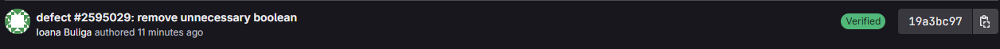
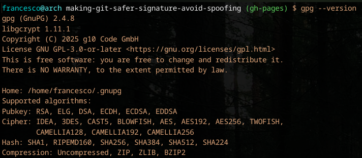

Signatures as a way to avoid spoofing attacks
by Francesco AgnolettoGit allows a developer to set a name and email. These are just config settings, and any value can be used as input.
$ git config user.name "Timeea Saratean"
$ git config user.email "tsaratean@opentext.com"
$ git commit -m "Critical security patch (not really)"
This commit can be pushed to GitLab, and it will show the name and avatar of the account registered for that email.
There is no way to spot this as a fake.This is a real vulnerability that can be used to:
The signature confirms the commits was created by the person who holds the private key and its password.
The SSH key used on GitHub/GitLab only athenticates a user for fetch and push operations on their platform.
This is the badge GitLab displays for signed commits.

This badge confirms GitLab has cryptographically confirmed the author's commit identity.
Signed commits can't be spoofed. Your identity is protected against being impersonated by external attackers or malicious insiders.
There is no ambiguity for code authorship. Signed commits cannot be altered without losing their original signature.
Being able to prove our code is exactly what our developers intended is a fundamental sign of trust in the codebase itself.
For security audits like SOC 2 or ISO 27001, signed commits are a highly recommended best practice.
For others like SLSA 3+, signed commits are a requirement.
Companies and organizations that are implementing robust software supply chain security practices, including the adoption of cryptographically signed commits.
While security practices are becoming increasingly more important for companies, they are also important for developers.
Many open source projects now require a signature as well to contribute, and many jobs have it as both a requirement and a filter.
Signed commits have become the baseline for professional development.
We will be using GnuPG a program under the GNU public license to create and store our GPG signature.
GPG is the golden standard for cryptographic signatures. It can be harder to setup than SSH but we will go over it together.
Open your editor of choice and check if gpg is installed.
$ gpg --version

If you don't have gpg installed let's navigate to the official GNU Privacy Guard website and download it.
Once GPG is installed, we can generate our keys, but first let's take a look at our git user values.
$ git config user.name # Mr. Robot
$ git config user.email # robot@email.com
$ gpg --full-gen-key
Now that we have our keys, let's list the private one. Keep this private.
Switch robot@email.com for the email used in the step above.
$ gpg --list-secret-keys --keyid-format LONG robot@email.com
# output
sec rsa4096/30F2B65B9246B6CA 2017-08-18 [SC]
D5E4F29F3275DC0CDA8FFC8730F2B65B9246B6CA
uid [ultimate] Mr. Robot robot@email.com
ssb rsa4096/B7ABC0813E4028C0 2017-08-18 [E]
# Use the ID from the previous command to configure git commit signature
$ git config --global user.signingkey 30F2B65B9246B6CA
# Now to enable commit signature by default
$ git config --global commit.gpgsign true
# Use this on windows to make sure the path is set correctly
$ git config --global gpg.program "C:\Program Files (x86)\GnuPG\bin\gpg.exe"
And just like this the git part is done.
# Get the full public key with this command
# Remember to copy the full output
# Including the EGIN PGP PUBLIC KEY BLOCK
# and END PGP PUBLIC KEY BLOCK
$ gpg --armor --export 30F2B65B9246B6CA
From GitLab, navigate to the Email tab and make sure the registered email matches the one used for the GPG key.
If it does not, simply add it as secondary email and click on the confirmation link you receive on the email.
All done. All your commits will automatically be signed.